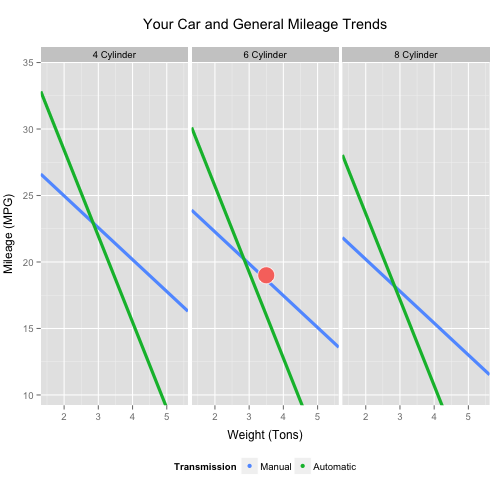

Imagine that it's 1974. The oil crisis of 1973 has just happened. What kind of car should you buy?
Meanwhile, you've heard a lot about linear regression. What's it useful for? How can you see a demonstration?
In a perfect world, you could use a computer to predict a car's gas mileage, using linear regression to calculate the answer. Well, it's possible.
There's an application called Mileage Predictor on the Web. With this app, you just enter basic information about a car. Then you immediately get the predicted mileage.
The application includes extra information for learning more -- a detailed trend graph, and background on the application and its statistics.
Let's consider an example.
Imagine that you're interested in a car with 6 cylinders, a weight of 3.5 tons, and automatic transmission.
What gas mileage will this type of car have?
A sample screen from the Mileage Predictor shows us the answer.
"The predicted gas mileage of your car is 19 MPG."

To try out the app yourself, please visit shinyapps.io:
For technical details, the source code for this app can be found on GitHub:
Thank you for your time!